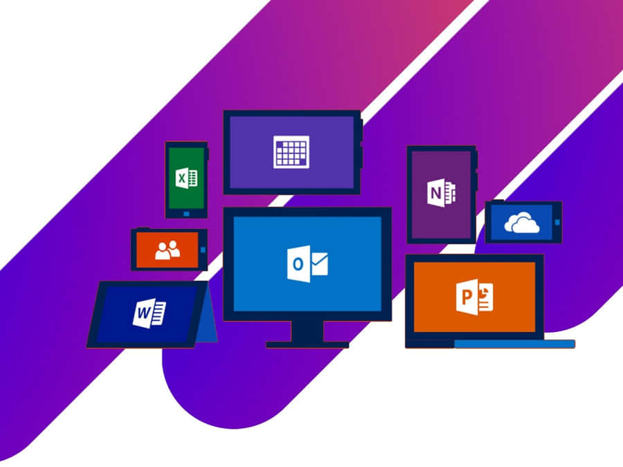

MS Word is a word processing software developed by Microsoft. It is widely used for creating, editing, formatting, and printing documents such as letters, reports, and newsletters. MS Word provides a wide variety of formatting tools that allow users to modify fonts, colors, text styles, and add elements such as tables, charts, and graphics. The program also includes features for spell check, grammar check, and automatic formatting. Additionally, MS Word supports collaboration tools, such as track changes and comments, allowing multiple users to work on a document simultaneously. It is an essential tool in both personal and professional settings, providing the flexibility to create complex documents with ease. The integration with other Microsoft Office applications further enhances its capabilities, making it a powerful tool for document management and presentation.
Microsoft PowerPoint is a powerful presentation software that allows users to create dynamic and visually engaging slideshows for a variety of purposes, including business presentations, educational content, and marketing materials. PowerPoint enables users to add text, images, videos, animations, and transitions to their slides. The user-friendly interface allows for easy customization of layouts, themes, and designs to create professional-looking presentations. One of PowerPoint's key features is the ability to integrate multimedia, such as audio and video, into slides, making it a versatile tool for multimedia presentations. Additionally, PowerPoint offers collaboration tools that allow multiple users to work on the same presentation in real time. This makes it an essential tool for professionals and educators who need to deliver engaging presentations to their audiences.
Microsoft Excel is a powerful spreadsheet application that is widely used for data analysis, calculation, and organization. It allows users to create worksheets with rows and columns of data that can be analyzed and manipulated using a wide variety of built-in functions and formulas. Excel is frequently used for tasks such as budgeting, financial analysis, data visualization, and statistical analysis. The software includes tools for creating graphs, charts, and pivot tables, making it ideal for visualizing data trends and patterns. Excel also supports powerful data management features, such as sorting, filtering, and conditional formatting, which help users organize and present large amounts of information effectively. Excel's ability to handle large datasets and perform complex calculations makes it a critical tool for professionals in fields such as finance, engineering, and research.
Microsoft Office is a suite of productivity software that includes a variety of applications for different tasks. MS Word, PowerPoint, and Excel are three core components of the suite that serve different purposes: word processing, presentation creation, and data analysis. These applications are designed to work seamlessly together, allowing users to integrate documents, presentations, and spreadsheets effortlessly. With its wide array of features, MS Office has become the standard software suite for both personal and professional use. Whether you're writing a document, giving a presentation, or analyzing data, MS Office provides the necessary tools to create and manage your work efficiently.
